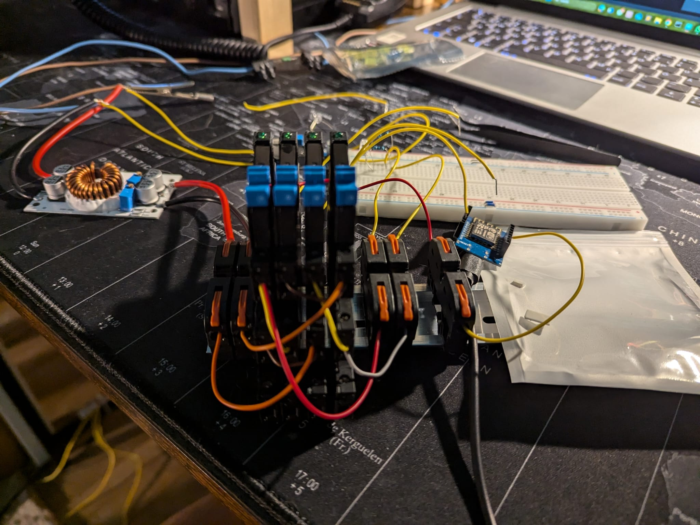
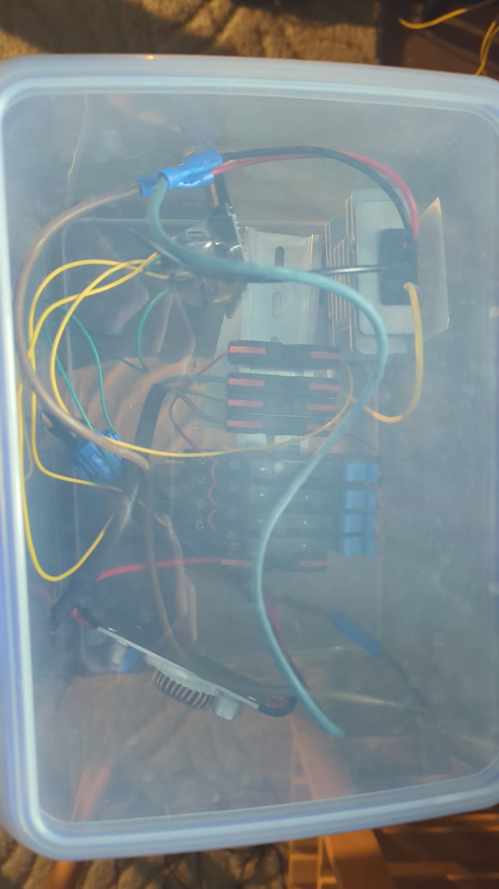
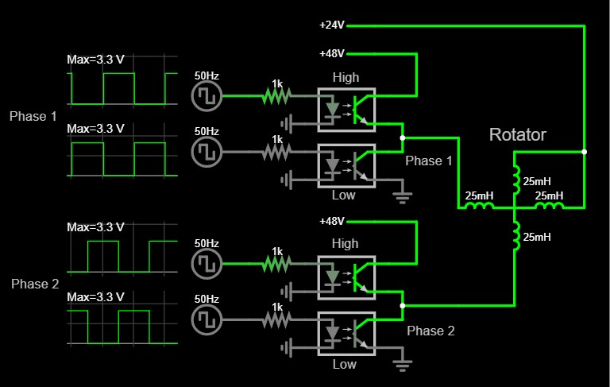
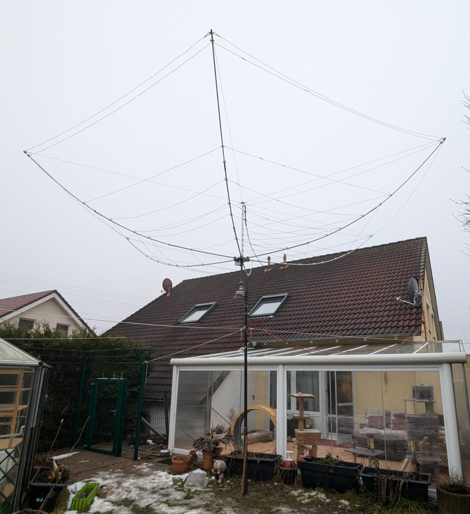

This is a DIY controller for the two-phase motor inside my old antenna rotator. I built it because the original controller was too loud for my liking. The original has since been quieted and put back into use, but the DIY unit worked well in the meantime. It's worth documenting because it was an interesting project since I had to make it act like the original but I had access to modern components.


The rotator motor has two coils, both referenced to a common 24V midpoint rail since the motor was designed to have the ends of both coils connected together. Each phase needs a signal that swings above and below that midpoint of 24V. The original controller achieved this naturally using stepped-down mains AC, which already swings around 0V. Since this design only produces positive voltages, 0-48V square waves centered on the 24V midpoint are used instead, which produces the same effective bipolar swing relative to the common rail. Each phase is driven by one SSR half-bridge pair. One SSR pulls the phase line up to 48V, while the other pulls it down to 0V. The ESP drives the first SSR directly with a square wave, and the second SSR with the same signal inverted (180° out of phase), ensuring the two SSRs never conduct at the same time. Phase 2 is driven identically, but its square wave is shifted 90° relative to Phase 1 — this phase difference is what produces the rotating magnetic field the motor needs to turn.

This picture shows my antenna used for amateur radio with the rotator under it. I needed a rotor since the antenna is directional and needs to be pointed wherever I want to transmit. The rotator is quite old and when I got it donated from a local ham radio club I thought it would be too weak, but it works well even with such a large antenna on it.